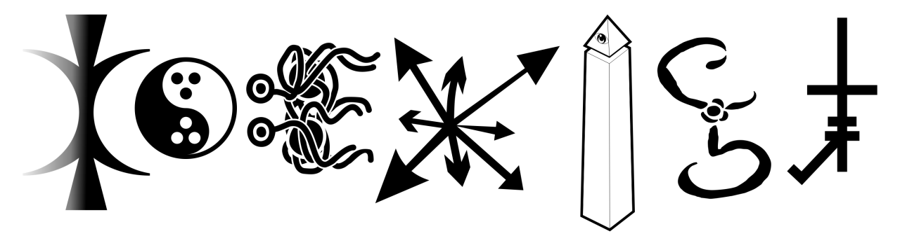
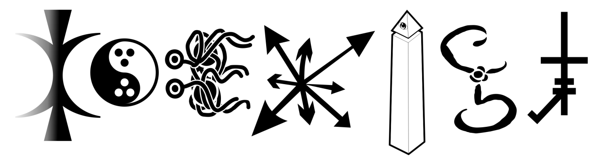
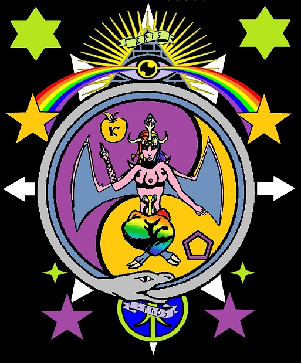
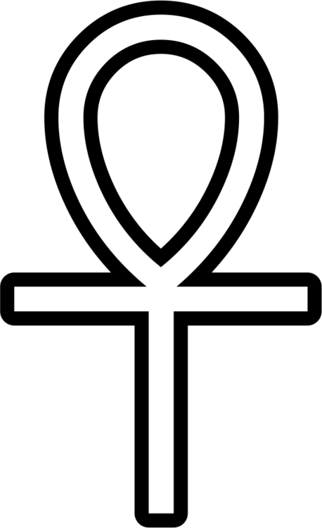
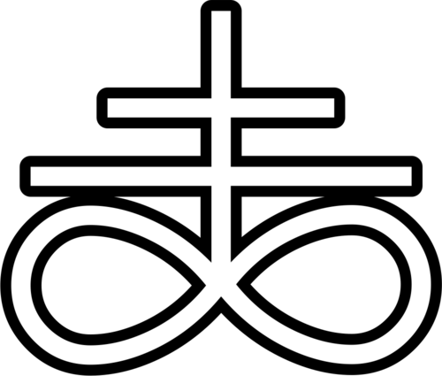
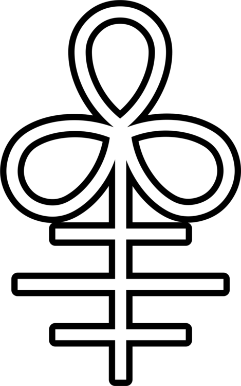

KOEXIST - I mean, hey, if they can do it, we can do it too. ;-)

KOEXIST - I mean, hey, if they can do it, we can do it too. ;-)

Erismorphing: Eris und Baphomet.
Ja man sagt das Eris die Göttin des Chaos ist. Und man sagt auch das die Discordier sie seid jeher als
die ihrige beanspruchen. Eine Religion die sich dem Chaos verschreibt beansprucht für sich also eine
alte griechische Göttin die älter als 2000 Jahre ist und diese wurde doch tatsächlich ziemlich
unverändert übernommen. Ja gewisse Charakterzüge wurden möglicherweise angepasst und modernisiert doch
Eris ist und bleibt Eris.
Der moderne Discodier von heute wird jedoch mit einer vielzahl von Göttern und Modellen konfrontiert
die ihm oder ihr vieleicht ebenso zusagen wie Eris also warum dogmatisch an der einen festhalten. Wobei
man Eris nicht unbedingt abschwören muß. Das Zauberwort hier heist Morphing. Im Grunde genommen heißt
das nichts anderes als das Eris für uns wie ein klumpen Ton ist. Schon in Form gebracht aber nicht
individualisiert. Nicht persönlich auf einen selbst zugeschnitten. Das Erismorphing beschäftigt sich
daher mit der Frage: Was geschieht wenn ich Eris mit einer Gottheit “verheirate” mit der ich mich
ebenfalls identifiziere. Welche Charakterzüge wird unser neuer Morph erhalten, wie reagiert “es”,
welche Gestallt mag “es” für sich beanspruchen? Auch hier kann und darf die Antwort nur individuell
sein. Vorgefertigte Muster und Schablonen können natürlich für den einzelnen ebenso ansprechend sein
wie das eigene fertige Konstrukt doch sollten sie im Idealfall für einen selbst eben nur Muster und
Schablonen bleiben die es zu adaptieren gilt. So mag das äussere einen ansprechen doch der Charakter
oder die handlungsweise sind nicht stimmig. Was spräche denn dagegen die Göttin des Chaos in einer
chaotischen Orgie zu transformieren ja zu individualisieren. Was kann die Göttin des Chaos dagegen
haben wenn sie selbst zu Chaos wird?
Du magst Eris und das Chaos und bist vieleicht Discordier? Doch gleichzeitig liebäugelst du mit den
Konzepten des Satanismuß oder Luziferismuß? Dann setz Eris ein par Hörner auf. Mach sie etwas düsterer,
vieleicht findest du auch Ziegenbeine und einen Schwanz ganz reizvoll. Und auch ihr Charakter wird sich
verändern. So mag sie nun egoistischer erscheinen, dunkler und okkulter als bisher. Das Chaos ist
voller Facetten und grenzenloß in seiner vielfalt und so sind auch die Aspekte von Eris. Ja selbst ihr
Name muß nicht ihr Name bleiben. Nenn sie Horst Herbert und doch wird sie für dich ewig deine
personalisierte Eris sein und daran wird sich nichts ändern. Was sind Namen schon mehr als Schall und
Rauch. Bist du Paganist und Discordier? Wie sähe Eris mit einem Geweih aus oder Adlerklauen. Vieleicht
trägt sie ein Wolfsfell oder eine Krone aus Zweigen? Wird sie animalischer und wilder, instinktiver?
Auch in der natur findet sich das Chaos. Gib ihr einen Namen oder nicht und erforsche ihre neue
Inkarnation. Und wenn du wiedererkennungswert willst dann gib ihr doch einen goldenen Apfel.
Eris ist Chaos
Chaos stagniert nie
Und nun geh hin und morphe.
(Translation of a German text by me on Aktion23)
Recently I noticed something, that is to say the similarity between two symbols. On the one hand the Egyptian Ankh symbol , the glyph for life, eternal life or the life after death:

And on the other hand, the “Satanic Cross” , also known as Leviathan Cross (originally the alchemical symbol for black sulphur):

I found the similarity in form, the combination of loop and cross shape, quite remarkable, but thinking about the Latin name almost left me speechless. >_> Because the Ankh is called Crux Ansata in Latin, which means something like “handled cross” or “cross with a handle”. And the sulphurous-satanic Leviathan Cross’ is obvious called… o_o Crux Satana. XD
OK, that sounds very similar, in the front part naturally we got “Crux” for “cross”, and behind that an adjective, and both are formed from the same letters… even almost the same syllables… from AN-SA-TA to SA-TA-NA isn’t a long way to go, simply turning the first syllable and returns them to the back … if you do that now again, to get to, um… <_< TA-NA-AS. Hm, Crux Tanaas. Sounds like shit, but fun. %-D
How would that look like then? The Ankh has a loop and below that the longitudinal beam and crossbeam. With the Leviathan Cross, it’s a double loop, and above that again a longitudinal beam and this time two crossbars. So, the next iteration would have three loops, and below that (it’s alternating each time) a beam with three crossbars. Something like this:
:-D Thus, a new icon, arisen from the line of the millennia-old Ankh and the centuries-old symbol for sulphur. Now what we do with it?
Well, you could of course carry this further, but I think the next symbol (with four loops and four crossbeams, back to the top) is only necessary in a range of a few decades. Anyways, it’s gonna be called Crux Naasat. After that, a few years later, comes the five-fold Crux Asatan, then a few months later, the six-fold Crux Atansa and… o_O then we seem to end up back at the Crux Ansata. -_-
Well, whatever. ^^